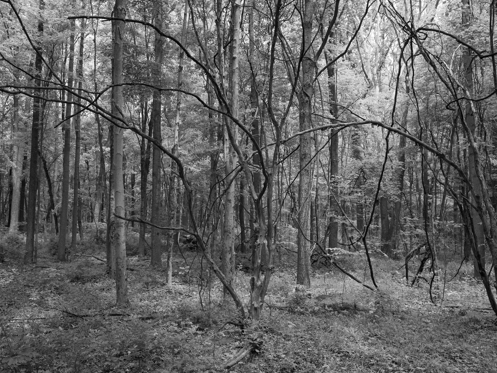
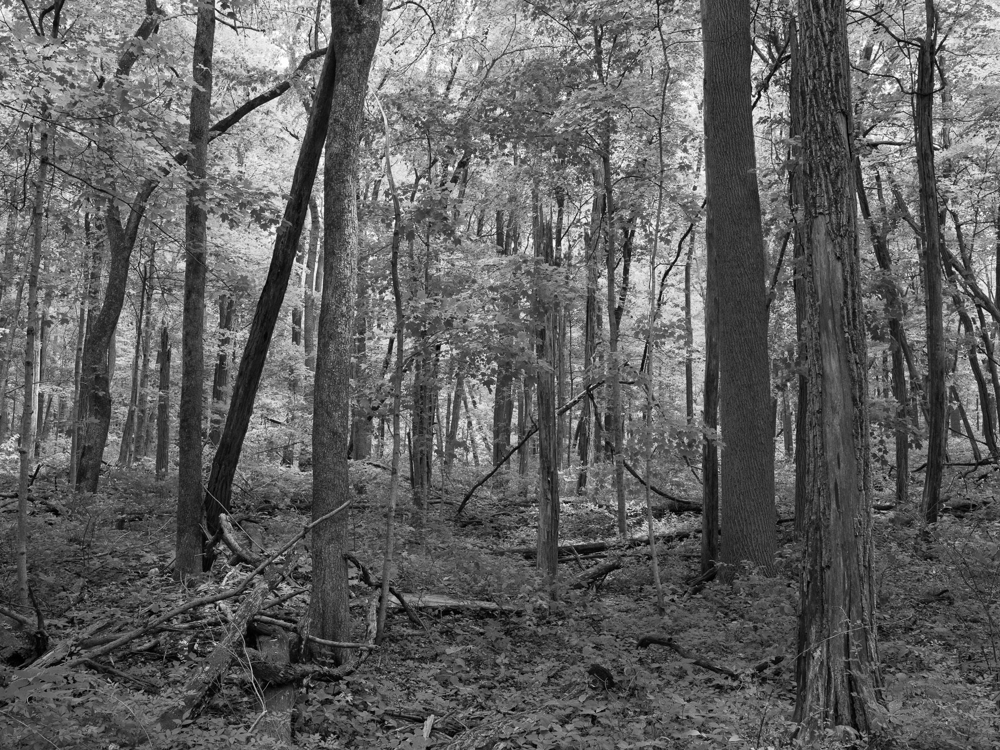
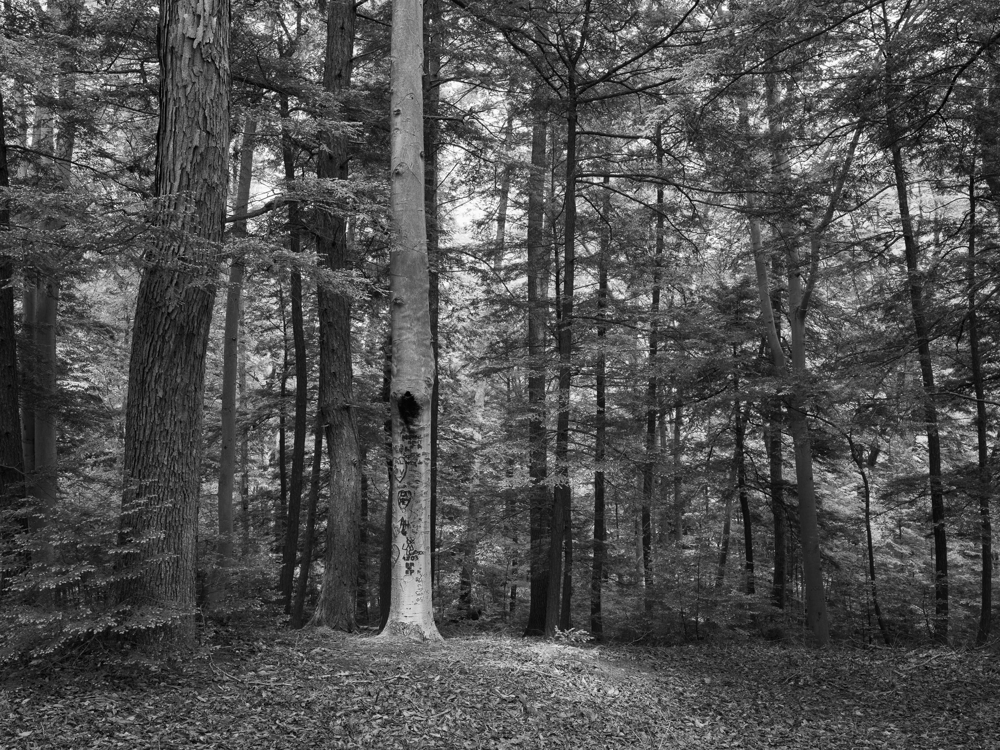
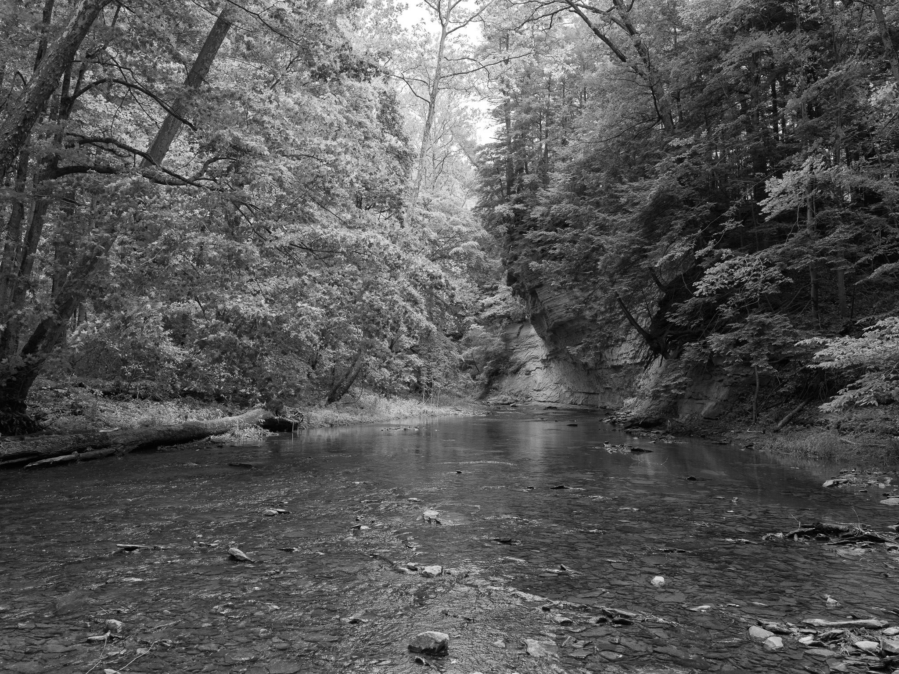
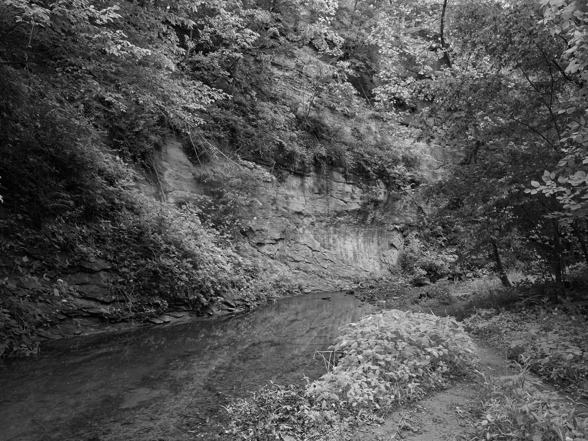
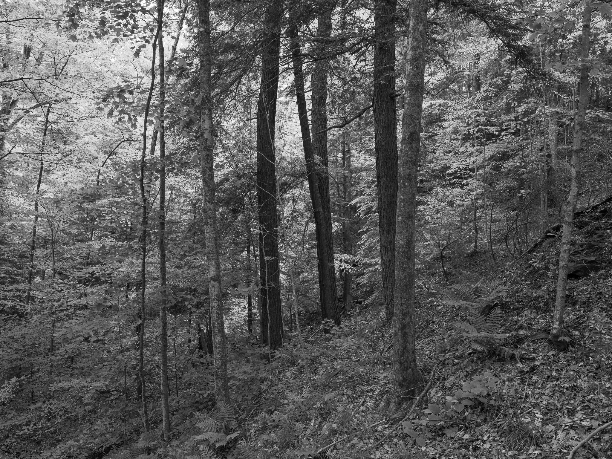

A 480-acre Indiana nature preserve of relict hemlock and white pine, where a sandstone ridge was notched in 1868 to carry water to a woolen mill.






These photographs are in the public domain (CC0 1.0). No permission is required. No credit is required.
Optional credit line: Public Lands Institute, publiclandsinstitute.net/sites/pine-hills-nature-preserve.html
To tell PLI where an image was used, write to contact@publiclandsinstitute.net.